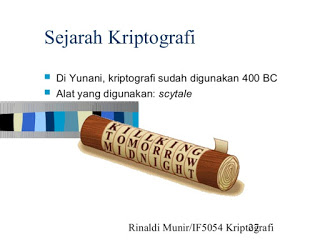

Pengertian Kriptografi
Kriptografi adalah ilmu mengenai teknik enkripsi dimana "naskah asli" (plaintext) diacak menggunakan suatu kunci enkripsi menjadi "naskah acak yang sulit dibaca" (ciphertext) oleh seseorang yang tidak memiliki kunci dekripsi. Dekripsi menggunakan kunci dekripsi bisa mendapatkan kembali data asli. Probabilitas mendapat kembali naskah asli oleh seseorang yang tidak mempunyai kunci dekripsi dalam waktu yang tidak terlalu lama adalah sangat kecil.
Teknik enkripsi yang digunakan dalam kriptografi klasik adalah enkripsi simetris dimana kunci dekripsi sama dengan kunci enkripsi. Untuk public key cryptography, diperlukan teknik enkripsi asimetris dimana kunci dekripsi tidak sama dengan kunci enkripsi. Enkripsi, dekripsi dan pembuatan kunci untuk teknik enkripsi asimetris memerlukan komputasi yang lebih intensif dibandingkan enkripsi simetris, karena enkripsi asimetris menggunakan bilangan - bilangan yang sangat besar. (Kromodimoeljo, 2010).
Aspek Keamanan Kriptografi
Kriptografi memiliki beberapa aspek keamanan antara lain :
- Kerahasiaan (confidentiality), menjamin bahwa data-data tersebut hanya bisa diakses oleh pihak-pihak tertentu saja. Kerahasiaan bertujuan untuk melindungi suatu informasi dari semua pihak yang tidak berhak atas informasi tersebut.
- Otentikasi (authentication), merupakan identifikasi yang dilakukan oleh masing – masing pihak yang saling berkomunikasi, maksudnya beberapa pihak yang berkomunikasi harus mengidentifikasi satu sama lainnya. Informasi yang didapat oleh suatu pihak dari pihak lain harus diidentifikasi untuk memastikan keaslian dari informasi yang diterima.
- Integritas (integrity), menjamin setiap pesan yang dikirim pasti sampai pada penerimanya tanpa ada bagian dari pesan tersebut yang diganti, diduplikasi, dirusak, diubah urutannya, dan ditambahkan. Integritas data bertujuan untuk mencegah terjadinya pengubahan informasi oleh pihak-pihak yang tidak berhak atas informasi tersebut. Untuk menjamin integritas data ini pengguna harus mempunyai kemampuan untuk mendeteksi terjadinya manipulasi data oleh pihak-pihak yang tidak berkepentingan. Manipulasi data yang dimaksud di sini meliputi penyisipan, penghapusan, maupun penggantian data.
- Nirpenyangkalan (Nonrepudiation), mencegah pengirim maupun penerima mengingkari bahwa mereka telah mengirimkan atau menerima suatu pesan. Jika sebuah pesan dikirim, penerima dapat membuktikan bahwa pesan tersebut memang dikirim oleh pengirim yang tertera. Sebaliknya, jika sebuah pesan diterima, pengirim dapat membuktikan bahwa pesannya telah diterima oleh pihak yang ditujunya. (Ariyus, 2008).
Sejarah Kriptografi
Kata kriptografi berasal dari bahasa Yunani, "kryptos" yang berarti tersembunyi dan "graphein" yang berarti tulisan. Kriptografi telah digunakan oleh Julius Caesar sejak zaman Romawi Kuno. Teknik ini dijuluki Caesar cipher untuk mengirim pesan secara rahasia, meskipun teknik yang digunakannya sangat tidak memadai untuk ukuran kini. Casanova menggunakan pengetahuan mengenai kriptografi untuk mengelabui Madame d'Urfe (ia mengatakan kepada Madame d'Urfe bahwa sesosok jin memberi tahu kunci rahasia Madame d;Urfe kepadanya, padahal ia berhasil memecahkan kunci rahasia berdasarkan pengetahuannya mengenai kriptografi), sehingga ia mampu mengontrol kehidupan Madame d'Urfe secara total. (Kromodimoeljo, 2010).

Kriptografi juga digunakan oleh tentara Sparta melalui alat pembuat pesan yang disebut Scytale. Scytale merupakan suatu alat yang memiliki pita panjang dari daun papyrus dan ditambah dengan sebatang silinder. Mula – mula pengirim menuliskan pesannya diatas pita papyrus yang digulung pada sebatang silinder, setelah itu pita dilepaskan dan dikirimkan. Batang silinder yang cukup tebal dapat dituliskan 6 huruf dan bisa memuat 3 huruf secara melingkar. (Ariyus, 2008).

 Perbedaan Jaringan 3G dan 4G
Perbedaan Jaringan 3G dan 4G
 Jumlah Core dan Hubungannya dengan
Jumlah Core dan Hubungannya dengan Pengertian Subnetting IP Address
Pengertian Subnetting IP Address  Cara Mengatur Layar di Windows Saat
Cara Mengatur Layar di Windows Saat Pengertian dan Cara Defrag/Defragment
Pengertian dan Cara Defrag/Defragment  Macam macam file audio dan
Macam macam file audio dan  Apa itu Extreme Programming ?
Apa itu Extreme Programming ?